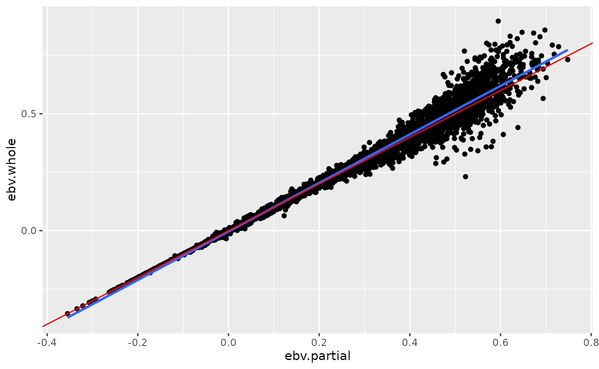

How To Use qzwslrm
howto.Rmd
library(qzwslrm)Installation
The package qzwslrm can be installed from Github
# if (!is.element("devtools", installed.packages()) install.packages("devtools")
devtools::install_github("fbzwsqualitasag/qzwslrm")Abstract
The package qzwslrm implements the computation of the
EBV validation statistics using the LR-method. This requires two vectors
with EBV for the same group of animals. One vector contains EBV for the
group of animals estimated using the full dataset (‘whole’) and the
second vector contains EBV for the same group of animals estimated using
only a partial dataset (‘partial’).
Given two vectors vec_ebv_whole and
vec_ebv_partial with EBV for the same group of animals from
whole data and partial data, respectively, the following command
computes a first set of validation statistics.
l_val_result <- val_ebv_lrm(pvec_ebv_partial = tbl_solani_partial$ebv,
pvec_ebv_whole = tbl_solani_whole$ebv)Usage
As shown above, the function val_ebv_lrm() is the
central function that computes the validation statistics. The function
val_ebv_lrm() returns a list with all validation
statistics. The results can be shown using the summary function
summary_lrm() or by converting them into a tibble.
Results
The function summary_lrm() can be used to show a summary
of the validation statistics
summary_lrm(l_val_result)
#>
#> Bias between partial and whole: -0.0061
#> Regression whole on partial: 1.0377
#> Correlation whole and partial: 0.9873
#> Regression partial on whole: 0.9393If the results should be displayed as a table this can be done by
converting it to a tibble and using then the function
knitr::kable().
tbl_lrm <- tibble_lrm(l_val_result)
knitr::kable(tbl_lrm)| Validation Statistic | Value |
|---|---|
| Bias between partial and whole | -0.0061 |
| Regression whole on partial | 1.0377 |
| Correlation whole and partial | 0.9873 |
| Regression partial on whole | 0.9393 |
Scatterplot
The comparison of the two vectors of EBV can also be illustrated by a
scatterplot. Such a plot can be generated using the function
scatterplot_lrm().
tbl_ebv_whole <- readr_ebv(ps_path = qzwslrm_example_solani("whole"), ps_format = "table",
pn_ebv_col_idx = 4)
tbl_ebv_partial <- readr_ebv(ps_path = qzwslrm_example_solani("partial"), ps_format = "table",
pn_ebv_col_idx = 4)
p <- scatterplot_lrm(tbl_ebv_whole, tbl_ebv_partial)
print(p)
The above plot shows for each animal the pair of EBV from the whole and from the partial dataset. The blue line corresponds to the linear smoother which is drawn based on the points. The red line corresponds to the line with a slope equal to one which is the expected regression line for the ‘whole’ on the ‘partial’ EBV.
The function scatterplot_lrm() requires as input two
dataframes with two columns. The first column contains the animal ID and
the second column contains the EBV.